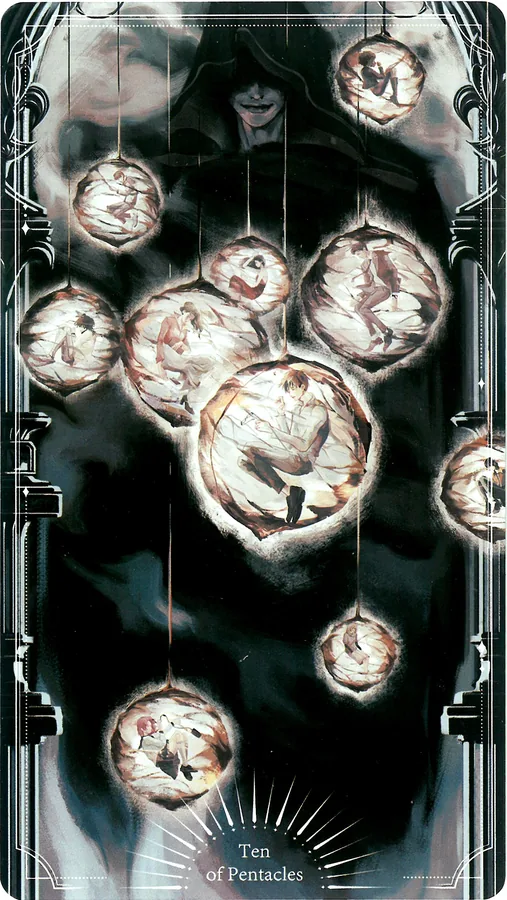

Overview
The Celestial Worthy of Heaven and Earth for Blessings was the original Great Old One, Lord of Mysteries, who was most active on Earth from the Pre-Epoch to the middle of the First Epoch, and the former owner of Sefirah Castle. He is also referred to as "The great ruler above the Spirit World" by the Seven Lights.1
The Transmigrators, Penglai, and the sealing of Sefirot inside the Western Continent were parts of the Celestial Worthy's resurrection plans.
Honorific Name
General honorific name
Lord of Mysteries, King of Space-Time, Beacon of Destiny, Embodiment of Sefirah Castle, Dominator of the Spirit World.2
In the Western Continent
The Immortal Lord of Heaven and Earth for Blessings, the Sky Lord of Heaven and Earth for Blessings, the Exalted Thearch of Heaven and Earth for Blessings, the Celestial Worthy of Heaven and Earth for Blessings.3
Appearance
He is only seen consisting of a cape and a mask.4
Personality
As the original Lord of Mysteries and an innate Great Old One, he embodied the godhood instincts and concepts of the Fool, Error, and Door Pathways, which include, but are not limited to, trickery, deceit and bizarreness.
According to the Genie, he was very cunning and shameless.5 According to Klein, he was a true Great Old One, looking down on the universe from high above and treating most of the living beings as insects. This would make him distance himself from reality.6
Great Existences like him would still have the most basic self-awareness of a living being's core and various instincts: selfishness, greed, survival, indifference, only caring about oneself, only doing things beneficial to oneself, not influenced or constrained by group morals, group interactions, or group perceptions.7 They can experience anger and violence, and can exhibit extreme and maddening tendencies and emotions.8
During the fusion process with Klein Moretti for several years, the Celestial Worthy had been living as an ordinary human inside The Fool's Dream. Inevitably, he had picked up some humanity. For example, he felt despair when realizing his defeat.9
History
Pre-Epoch
In a time more ancient than the Modern Era of the Pre-Epoch, the sleeping Original Creator had naturally split into multiple personas. They were also in a state of slumber, but they began to use the authority and Beyonder Characteristics they controlled to influence the world, making many preparations for the true dissociation which would occur when the Original Creator's body awakened. Among the multiple personas, the Primordial God Almighty and the Celestial Worthy of Heaven and Earth for Blessings were the most powerful and active on Earth.10
- He was active on Earth at least as early as the Qin or Han Dynasty of the Pre-Epoch, based on the fact that his honorific name and a corresponding ritual to enter Sefirah Castle was recorded in a book named Quintessential Divination and Arcane Arts of the Qin and Han Dynasty, which was eventually obtained by Klein Moretti in the Modern Era.11 His holy temple was in current day Penglai.12
In the Modern Era, he seized the spirit bodies of various people and hung them as cocoons in Sefirah Castle as part of his preparation.
First Epoch
Lost Era
After the Original Creator awakened and split apart, the Primordial God Almighty and the Celestial Worthy leveraged their long-prepared ancient schemes across the times of the Old Earth to gradually gain advantages in their fight against the Sefirot. The two Pillars eventually defeated the other Sefirot (excluding the Brood Hive and the Key of Light) and shattered their wills, making those wills take a very long time to recover and awaken again.13
During this time, the Son of Chaos was able to bypass the Astral Barrier by killing himself and then resurrecting through the Black Emperor ability.14 However, he encountered the Celestial Worthy and was controlled by him until the end of this era.15 What remained of him in the Cosmos became known as the Outer Deity Uncertain Mist, with some consciousness.
After the Primordial God Almighty and the Celestial Worthy absorbed their first additional Sefirah, they exceeded the limit of the Pillar, the highest level of stability one can achieve. This made their inclination to converge more intense, making it impossible for them to control themselves, and they began taking actions against each other.16 The devouring of their first additional Sefirot marked the end of the Lost Era.17
- The Celestial Worthy accommodated the Nation of Disorder and the River of Eternal Darkness.18
Era of Destruction
Both the Primordial God Almighty and the Celestial Worthy made various arrangements, some to ensure their own revival, and some to prevent the other's revival.19
At the start of this era, the Son of Chaos was sealed inside the Magic Wishing Lamp by the Celestial Worthy, and became the Genie.20
After the Celestial Worthy completed the creation of the Magic Wishing Lamp, he and the Primordial God Almighty engaged in full-scale war, extinguishing the sun and plunging the world into darkness.21 No one, not even the Seven Lights of the Spirit World, knows the exact situation of the battle between the Celestial Worthy and the Primordial God Almighty. After the battle, both Pillars perished.22
- The Primordial God Almighty's corpse formed the First Blasphemy Slate in the Chaos Sea, and beside it was the Uniqueness of Error, which was intentionally used by the Celestial Worthy to stop the Primordial God Almighty's first resurrection within the Ancient Sun God.23
- The Celestial Worthy sealed all Sefirot on Earth apart from Sefirah Castle and the Chaos Sea to the Western Continent, to be guarded by Penglai.24
- This was a part of his resurrection plan: by sealing the Sefirot, the Gods of other pathways would have to help someone reach either Lord of Mysteries or God Almighty (to either remove or break the Western Continent's seal respectively) before they could obtain the Sefirot themselves to become a Great Old One. Then, he would have a high chance to awaken inside the new Lord of Mysteries.25
- Penglai held one of the backup plans of the Celestial Worthy for his resurrection. Since there was no way for the Celestial Worthy to guarantee that the people of Penglai would believe in him for generations and not betray him, his only option was to scatter and tamper with the characteristics and items.26 Those from Penglai can utilize a bit of Sefirah Castle.27
As another plan for his resurrection, he arranged for Sefirah Castle to release certain people in the cocoons when certain requirements were met.
- The original plan was for the released person to directly be accompanied with a "curtain" containing a set of Sequence 9 to 1 Beyonder Characteristics of the Fool Pathway stored inside Sefirah Castle. Since these characteristics had not undergone generations of Beyonders and Beyonder creatures to dilute and wear off the Celestial Worthy's will, if a Transmigrator was born with them in the Fourth Epoch or earlier, they would be taken over by the Celestial Worthy the moment they became an Attendant of Mysteries.
- However, something unknown had happened to the Celestial Worthy, causing many of the prior arrangements to be out of control. Sefirah Castle could only experience a certain change in the late Fifth Epoch, after two consecutive failures.28
- After the birth of a Transmigrator, they were guaranteed to quickly make a connection with one of the three pathways under Sefirah Castle.29 If they eventually choose one of these three pathways, they would be able to enter and establish a connection with Sefirah Castle.30 As the owner of Sefirah Castle, starting from Sequence 2, the corruption and contamination from the Celestial Worthy they suffer would be higher than others.31
Before their deaths, the Primordial God Almighty and the Celestial Worthy's strong and still perfect and whole power deterred the Outer Deities, who could only settle for observing Earth from afar for the time being.32
Second Epoch
Sefirah Castle released the first transmigrator, Amanises. She was a Subsidiary God under the Annihilation Demonic Wolf Flegrea, who held the authority of the Fool Pathway.33
Third Epoch
In the late Third Epoch, the Ancient Sun God wanted to create a weakened Celestial Worthy to counter the Primordial God Almighty. He didn't choose Amon because, as an activated Uniqueness, Amon was extremely similar to the Celestial Worthy and might lead to his revival. After Bethel Abraham was born, he advanced quickly on the Door Pathway due to the Ancient Sun God's favor.34
Fourth Epoch
In the Fourth Epoch, the will of the Celestial Worthy was still strong, so it was not suitable for the three Mysteries pathways to become Sequence 0.35 As a result, both Amon and Bethel only wished to make all sorts of preparations, hoping to make the attempt when The Apocalypse was approaching.36
The reason the three Uniqueness under Sefirah Castle (Amon, Bethel, and Antigonus) converged at the Tudor Empire was because of guidance from spirituality. In particular, the reason why Bethel joined the Tudor Empire was because of the passive instinct of the Celestial Worthy to prevent the resurrection of the Primordial God Almighty.37 This was because the Primordial God Almighty had once accommodated the City of Calamity, and his consciousness had slowly revived in the Primordial Demoness and Alista Tudor.38
As an attempt to create a Calamity of Destruction, the Primordial Demoness and Alista Tudor consummated inside the Special Mirror World created by Bethel Abraham, who was partially under the influence of the Celestial Worthy's godhood. The Oldest One's body of both male and female, plus the power of the two direct Pillars belonging to the Oldest One, gave birth to the consciousness of the Mirrored Original Creator.39
During the War of the Four Emperors, after Solomon's fall, Trunsoest attempted to accommodate the Uniqueness of Black Emperor. This was one of the reasons that caused his issues, because the Celestial Worthy had once accommodated the Nation of Disorder, which includes the Black Emperor Pathway. Trunsoest's and Auernia's falls later on was partially related to this.40
After Antigonus lost control, his self-awareness was no longer able to suppress the Celestial Worthy's will in him. The two psyches got stitched together, revealing a most primitive, most instinctual, and also most bloody and crazy side. Since the Celestial Worthy is the former owner of Sefirah Castle, the present Antigonus can indirectly influence Sefirah Castle by using this identity very naturally. After Antigonus was sealed by the Evernight Goddess, she could use the Uniqueness of Fool inside Antigonus to indirectly affect Sefirah Castle in certain matters, such as tampering with the Beyonder characteristic that accompanied a transmigrator away to prevent the instant awakening of the Celestial Worthy in them.41
During the Conflicts of the Seven Gods, Death relied on a distributary of the River of Eternal Darkness to forcibly accommodate the Uniqueness of Red Priest to create a brand new Great Old One path. This has the influence of the True Creator, as well as the Celestial Worthy who had once accommodated the River of Eternal Darkness which included the Death Pathway.42 His forced accommodation of the Uniqueness of Red Priest caused an aberration in the Mirrored Original Creator, producing a certain self-awareness, which negatively affected her state.43
- The reason for the Celestial Worthy's influence which eventually led to this aberration was to prevent the Primordial Demoness' plan regarding the Mirrored Original Creator. This is because if there were no mutation, and she continued down the path, succeeding would make her the Mirrored Original Creator; failing would still birth the Mirrored Original Creator. With the aberration, now both sides have formed a certain balance until The Apocalypse, leading to new changes.44
Fifth Epoch
In 1143, Sefirah Castle released the second Transmigrator, Roselle Gustav. He transmigrated in Intis which had the Secret Order, and quickly got to know Zaratul, an angel of the Fool Pathway.45
In 1349, Sefirah Castle released the third Transmigrator, Klein Moretti. He was instantly involved in the case brought about by the Antigonus Family's Notebook, and also quickly had the opportunity to choose the Seer potion.46
In Klein's Apotheosis Ritual, when the Celestial Worthy was about to resurrect inside Klein's main body, all of the Gods present tacitly cooperated together to stop his awakening.47 His awakening was interrupted by Klein's avatar's control over Sefirah Castle, Amon's gifting of stolen "eternal slumber", 0-05's use of Trunsoest Brass Book, Adam's prophecy powers and the Evernight Goddess' use of River of Eternal Darkness water. Ultimately, he, along with Klein's main body, was killed by the Evernight Goddess, before Klein resurrected using the power of miracles.
In The Fool's Gambit, Klein was pushed by Amon to the point where he had to release the will of the Celestial Worthy inside him to prevent Amon from winning. Even though he managed to achieve victory against Amon in the end, he had to enter a deep sleep afterwards to fight and fuse with the remaining will of the Celestial Worthy. The people inside the cocoons in Sefirah Castle, the Transmigrators, were released by Klein before his sleep. From then, the Celestial Worthy and Klein had been contending against each other within The Fool's Dream.
By 1358, the Celestial Worthy chose some of the released transmigrators in the Curly-Haired Baboons Research Society to use, such as Loki, to complete the resurrection within Klein. After The Fool's Dream, Klein started the process of accommodating Sefirah Castle and fusing with the will of the Celestial Worthy.
After The Day of Many Disasters, the Celestial Worthy was agitated by the terror of the Original Creator and the hatred of the Primordial God Almighty borne towards him, and chose to compromise and cede the contest to Klein Moretti. By June 25, 1360, Klein Moretti completed his confrontation and fusion with the Celestial Worthy, and finished accommodating Sefirah Castle. Over a month later, during The Apocalypse, he returned to the Astral World to merge with Gehrman Sparrow and retrieve the Uniqueness of Error and Door and Sequence 1 Beyonder Characteristics to become the Lord of Mysteries.48
Trivia
- The term Celestial Worthy (天尊, Heavenly Venerable, Tiānzūn) is a title primarily used in Taoism to refer to the highest gods in the Taoist pantheon, most prominently, the Three Pure Ones.
- When asked if the Lord of Mysteries is inspired by the following, the author answered with "All of them":49
- The Jester in Yellow, a Chinese SCP.
- Nyarlathotep, an Outer God in the Cthulhu Mythos. As the "God of a Thousand Forms" who delights in deception, Nyarlathotep corresponds to the Faceless and Swindler.
- The Gods of Pegāna, which served as a prototype and influence to the Cthulhu Mythos. The attendant "Time" corresponds to Nyarlathotep, which corresponds to the Worm of Time.
- Yog-Sothoth, an Outer God in the Cthulhu Mythos.
- Azathoth, an Outer God in the Cthulhu Mythos, who corresponds to the Fool's authority.
- The Celestial Worthy doesn't have any children.50
- The Celestial Worthy never modified any of his three pathways like Amon did with the Error Pathway.51
References
- Book 1, chapter 1271.
- Book 1, chapter 1271.
- Book 1, chapters 5 and 1215.
- Discord International AMA with the author, question 7.
- Book 1, chapters 1349 and 1350.
- Book 1, chapter 1386.
- Book 2, chapter 1088.
- Volume 6: Dream Weaver, Author's Note.
- Book 2, chapter 1032; Volume 6 Author's Note.
- Book 1, chapter 1369.
- Book 1, chapter 2.
- Author's WeChat post ph, question 22.
- Author's WeChat posts mgod, parts 6 and 13.
- Author's WeChat post ph, part 8.
- Author's WeChat post beauty_goddess.
- Book 1, chapter 1272.
- Author's WeChat post history.
- Book 2, chapter 1088.
- Book 2, chapter 1089.
- Author's WeChat post beauty_goddess.
- Author's WeChat post history.
- Book 1, chapter 1369.
- Volume 6: Dream Weaver, Author's Note.
- Book 1, chapters 1272 and 1369.
- Book 1, chapters 1369, 1272, 1347 and 1380.
- Author's WeChat post ph, question 22.
- Author's WeChat post red_priest, part 61.
- Book 1, chapter 1358.
- Book 1, chapter 1171.
- Book 1, chapter 1308.
- Book 1, chapter 1272.
- Author's WeChat post history.
- Book 1, chapter 1171.
- Author's WeChat post sun_abilities, part 15.
- Book 2, chapters 1107 and 1177.
- Book 1, chapter 1369.
- Author's WeChat post sd, part 24.
- Book 2, chapter 1107.
- Book 2, chapter 1107.
- Author's WeChat posts gof, parts 12, 34 and 40; tyrant_formulas, part 43.
- Book 1, chapter 1369.
- Author's WeChat post ph, part 20.
- Book 2, chapter 1107.
- Author's WeChat post black_emperor_formulas, part 21.
- Book 1, chapter 1171.
- Book 1, chapter 1171.
- Book 1, chapter 1379.
- Book 2, chapter 1150.
- Author's WeChat post fool_authorities, part 5.
- Author's WeChat post mod, part 4.
- Author's WeChat post moon_formulas, part 48.
Source
Article adapted from Celestial Worthy of Heaven and Earth for Blessings on the Lord of the Mysteries Fandom wiki (CC BY-SA). Chapter numbers follow that article's citation format.
Image gallery
